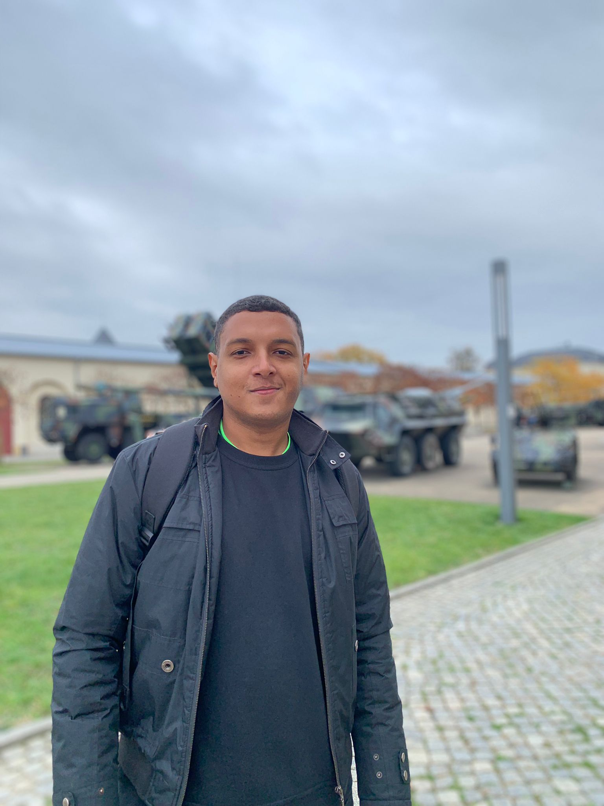

Postdoctoral Researcher · Radio Astronomy Instrumentation · FPGA & Real‑time Signal Processing
I'm a postdoctoral researcher and applied physicist working at the intersection of physics, real‑time digital signal processing, and hardware acceleration. I currently design FPGA-based digital signal processing systems for the BINGO radiotelescope at the Federal University of Campina Grande (UFCG).
My research journey began in quantum physics, where I focused on numerical simulations and statistical analysis of quantum transport in mesoscopic systems during my PhD at the Federal University of Paraíba (UFPB).
I've since transitioned to applied engineering, concentrating on adaptive complex systems and reconfigurable computing. My postdoctoral work has spanned real-time fault detection in drones using chaos theory at TU Dresden, FPGA-based digital signal processing for the BINGO radiotelescope at UFCG.
Federal University of Paraíba (UFPB), Brazil
Thesis: "Unveiling the universal class categorization of Altland-Zirnbauer in mesoscopic systems: probing entanglement and conductance fluctuations"
Advisor: Prof. Jorge Gabriel Gomes de Souza Ramos
Focus: Numerical simulations and statistical analysis of quantum transport in mesoscopic systems
Federal University of Paraíba (UFPB), Brazil
Thesis: "Chaos-mediated entanglement in an open quantum dot via the Keldysh formalism"
Advisor: Prof. Jorge Gabriel Gomes de Souza Ramos
Federal University of Paraíba (UFPB), Brazil
Federal University of Campina Grande (UFCG), Brazil
Project: BINGO (Baryon Acoustic Oscillations in Neutral Gas Observations) Radiotelescope
Funding: FAPESQ (Research Support Foundation of the State of Paraíba)
Designing wideband spectrometers and polyphase filter banks in VHDL/Verilog for real-time, multi-GHz RF data streams on SKARAB/Xilinx FPGAs, implementing 40 GbE QSFP+ data streaming and Python/C++ control software via the KATCP protocol.
Technische Universität Dresden (TUD), Germany
Funding: CAPES/DAAD (PROBRAL Program)
Focus: FLIN4 project — adaptive complex systems and reconfigurable computing
Investigated real-time fault detection techniques using chaos theory with drones, implementing AI-based diagnostics on FPGA platforms for autonomous systems. Results published at DATE 2024 (Valencia, Spain).
FPGA-based digital signal processing systems for the BINGO radiotelescope project, enabling real-time cosmological signal analysis.
Embedded system for real-time failure diagnosis in UAVs using AI and chaos-based methods on FPGA platforms.
Numerical simulations and statistical analysis of quantum transport phenomena in mesoscopic systems using random matrix theory.
Feel free to reach out for collaborations, research opportunities, or engineering work. I'm always open to discussing new projects and ideas.